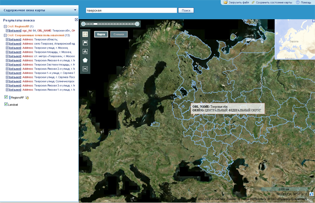

| Необходимые компоненты |
Для установки программы GeoMixer необходимо предварительно установить следующие компоненты:
1. Microsoft (MS) IIS 6.0.
2. Microsoft .NET Framework 3.5 with SP1. Если IIS не был установлен, то сначала надо установить IIS, а потом Framework 3.5. После установки Framework 3.5. откройте IIS Manager -> Web Service Extensions и проверьте, что ASP.NET включен.
3. MS SQL Server 2008 Standard (Enterprise) или MS SQL Server 2008 Express with Advanced Services (SQL-Express распространяется бесплатно)
4. MS SMO (Shared Management Objects): SharedManagementObjects.x64.msi или SharedManagementObjects.x86.msi (в зависимости от типа ОС - либо x64, либо x86)
5. MS SQL ClrTypes (SQL System Clr Types): SQLSysClrTypes.x64.msi и SQLSysClrTypes.x86.msi (обязательно обе компоненты)
Комментарии. IIS 6.0 входит в стандартный дистрибутив Windows Server 2003. Компонеты 4, 5 можно скачать здесь (внизу на странице).
|
| Установка и настройка MS SQL Server 2008 |
1. В списке устанавливаемых компонент необходимо выбрать сервис Full-Text Search и компоненту Management Tools (приложение SQL Management Studio).
2. При настройке аккаунтов сервисов, входящих в MS SQL Server, для сервиса Full-Text необходимо поставить аккаунт Local System.
3. После установки откройте панель SQL Server Configuration Manager и проверьте, что следующие пункты стоят правильно.
|
| Установка GeoMixer |
До GeoMixer необходимо установить все компоненты 1-5 (см. Необходимые компоненты)
Шаг 1. Сначала нужно выбрать сайт, на котором будет установлено приложение. Можно выбрать существующий сайт или создать новый, в обоих случаях GeoMixer устанавливается в корень сайта.
Шаг 2. Теперь нужно указать а) путь для установки утилит и б) путь рабочей папки для записи данных. Рекоммендация, чтобы эти пути были вне директории сайта
Шаг 3. На последнем шаге настраивается подключение к SQL серверу. Возможны два варианта подключения: а) Windows-аутентификация и б) SQL-аутентификация:
а) В случае Windows-аутентификации пользователь, который устанавливает GeoMixer, должен иметь административный аккаунт на SQL сервере (роль "sysadmin" или "serveradmin")
б) Проверьте, что на SQL сервере включен режим SQL-аутентификации. А также, что соответствующий SQL-пользователь (логин и пароль, указываемые в настройках подключения) имеет административные права на SQL сервере (роль "sysadmin" или "serveradmin")
|
| Тестирование |
1. Скопируйте и разархивируйте TestData.zip.
2. Открыть браузер, набрать адрес сайта (localhost, ip-адрес или url - в зависимости от настроеек). Должна появиться форма для ввода логина-пароля. Ввести: LayerManager/LayerManager.
3. Зайти в "Карты", создать карту "Map1".
4. Открыть карту Map1. Нажать "Добавить растровый слой" -> Имя слоя (написать "Landsat") -> Каталог с тайлами (выбрать путь к папке Landsat)->Создать.
5. Нажать "Добавить векторный слой" -> Файл (выбрать файл "/Regions/RegionsRF.shp")->Создать.
6. (Для просмотра карты требуется установить плагин Adobe Flash Player) Нажать "Просмотр", при этом сохранить изменения на карте - в окне геопортала должны появиться два слоя: мозаика Landsat и границы субъектов РФ.
7. В строке поиска введите "Тверская", нажмите "Поиск" - в результатах поиска должен появиться найденный объект.

|
| Редактирование config.js (настройка шаблона карты) |
|
Для изменения настроек базового шаблона отображения карты (MapViewer Tamplate) откройте в текстовом редакторе файл config.js (файл содержится в директории api, в корне вашего сайта)
Параметры config.js
| var defaultMapID = false;
|
Параметр позволяет задать ID карты, которая будет загружаться по умолчанию для данного сайта |
| var mapHostName = false; |
Позволяет задать путь к GeoMixer, если он отличается от директории, в которую установлен сайт (например, "maps.kosmosnimki.ru") |
| var apiKey = false;
|
Параметр, учитывающий API-ключ при запросе за картой |
| var useKosmosnimkiMap = true;
|
Использование базовой подложки с сервера Kosmosnimki - включение данного параметра добавляет два базовых слоя: Снимки и Карта |
| var defaultX = false;
|
Задание начальной координаты по долготе |
| var defaultY = false;
|
Задание начальной координаты по широте |
| var defaultZ = false;
|
Задание начального уровня детализации карты |
| var defaultPermalinkID = false; |
Загрузка карты по умолчанию через пермалинк (Ссылка на карту): сохраненное положение карты, параметры слоев |
| var canDownloadRasters = true; |
Включение/выключение опции «Вырезание фрагмента растрового слоя» |
| var canDownloadVectors = true; |
Включение/выключение опции «Скачивание векторного слоя» |
| var miniMapZoomDelta = -3; |
Параметр определяет разницу между уровнем детализации изображения карты и изображения миникарты |
| var showPropertiesBalloons = true; |
Включение/выключение опции отображения всплывающей подсказки (балун) |
| var copyright = false; |
Добавление копирайтов на карту: (например, "© ИТЦ СканЭкс") |
|
{kind=link}
{kind=link}
{kind=link}
{kind=link}
{kind=link}
{kind=link}
{kind=link}
{kind=link}
{kind=link}
{kind=link}